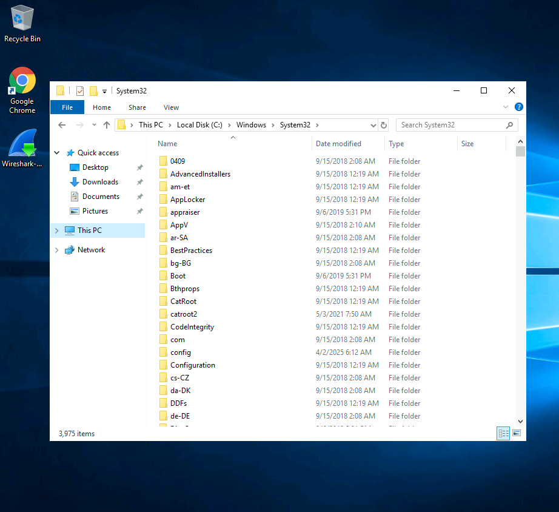

THM Windows 1
L'objectif est de découvrir l'OS Windows : comment il fonctionne et ce qu'il est capable de faire.
Éditions Windows
- Windows XP : Longue durée de vie et très populaire
- Windows Vista : Beaucoup de problèmes, rapidement oublié
- Windows 7 : Obligations d'adaptation pour les vendeurs, rapide → cauchemar
- Windows 8 : Idem que Vista
- Windows 10 Pro : Peut activer BitLocker
- Windows 10 Home
Interface Windows

- The Desktop : Raccourcis fichiers, dossiers, programmes, etc.
- Start Menu : Accès à toutes les applis, fichiers, outils
- Search Box (Cortana)
- Task View : Win + Tab
- Taskbar : Affiche/cache des éléments
- Toolbars : Clic droit sur le logo Windows
- Notification Area : Zone affichant la date, l’heure, OneDrive, etc.
Système de fichiers

Versions de fichiers Windows :
- FAT16 : Ancien système de fichiers, peu utilisé
- FAT32 : Meilleure gestion, utilisé sur USB/SD
- NTFS : Système moderne, sécurisé, fiable
Avantages de NTFS :
- Support des fichiers de plus de 4 Go
- Autorisations spécifiques sur fichiers/dossiers
- Compression de fichiers et dossiers
- Chiffrement (EFS)
Dossier Windows System32
Le dossier C:\Windows\ contient l'OS, mais peut varier selon l'installation. C’est pourquoi on utilise la variable d’environnement %windir%.
System32 contient des fichiers critiques au fonctionnement de Windows. Les modifier peut causer des dysfonctionnements.
Utilisateurs, profils et permissions

Types de comptes :
- Administrateur : Peut modifier les paramètres, ajouter/supprimer des utilisateurs, etc.
- Utilisateur standard : Ne peut modifier que ses propres fichiers, ne peut installer des programmes
Pour créer un utilisateur : taper nouvel utilisateur dans le menu Démarrer.
Chaque utilisateur a un dossier dans C:\Users\ avec :
- Bureau
- Documents
- Téléchargements
- Musique
- Photos